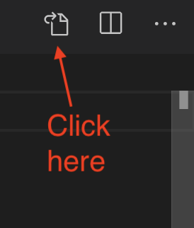

VS Code Goodies
VS Code is a pretty awesome code editor. It can save you a $4!t-ton of time.
Extensions
If you look on the left-menu, there is a square looking icon that gives you a list of extensions that you can search for an enable. See the VS Code docs for more info.
Some of those that I have used (and I’m finding more every day):
- Nunjucks Templates: gives you syntax highlighting for Nunjucks pages. Needs a little configuration to work with our First Graphics App pages. See Preferences below.
- markdownlint: tells you when your Markdown syntax is incorrect.
Optional
- Excel Viewer: is something to help preview csv files. Not essential, but helpful when working with data.
Preferences
I have some helpful user preferences for VS Code that you might find useful.
- Go to the Code > Settings > Settings.
- At the top right of the code editor are a series of icons, including this one:

- In the new file that opens, copy and paste the code below and replace what is there.
- Save and close the file.
{
"editor.fontSize": 14,
"terminal.integrated.fontSize": 12,
"editor.renderWhitespace": "boundary",
"editor.tabSize": 2,
"[md]": {
"editor.insertSpaces": true,
"editor.tabSize": 2
},
"editor.renderControlCharacters": true,
"highlight-matching-tag.style": {
"backgroundColor": "rgba(63, 191, 63, 0.20)"
},
"editor.wordWrap": "on",
"window.zoomLevel": 0,
"editor.minimap.enabled": false,
"files.associations": {
"*.html": "html"
},
"emmet.includeLanguages": {
"njk": "html",
"nunjucks": "html"
}
}If you look through the JSON, you might be able to figure out what some of these do. This isn’t a full description of them, but …
- I set default size of text in the editor. I’m old, so I make it bigger so it’s easier to read. If that is too big, you can change it later.
- I set make the text in the terminal window bigger. Still old.
- I set the editor to show spaces that aren’t between words. This makes indented code easier to see.
- I set the tab character to insert two spaces. This is a common coding default.
- I remove the minimap thing that shows by default at the right side of an open file. I find it more of a hassle than useful.
There are more. They will be helpful.